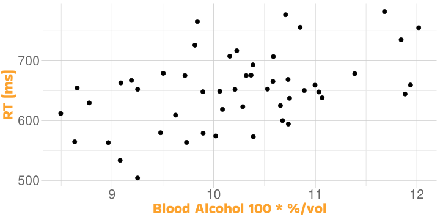

The Linear Model
Univariate Statistics and Methodology using R
Intercept and Slope

...
(Intercept) 321.24 91.05 3.53 0.00093 ***
BloodAlc 32.28 8.88 3.64 0.00067 ***
...Testing the Model: R2
\[ R^2 = \frac{\textrm{model SS}}{\textrm{total SS}} = \frac{\sum{(\hat{y}-\bar{y})^2}}{\sum{(y-\bar{y})^2}} \]
how much the model improves over the null
\(0 \le R^2 \le 1\)
we want \(R^2\) to be large

Cook’s Distance

- a standardised measure of “how much the model differs without observation \(i\)”
 Cook’s Distance
Cook’s Distance
 Cook’s Distance
Cook’s Distance\[D_i=\frac{\sum_{j=1}^{n}{(\hat{y}_j-\hat{y}_{j(i)})^2}}{(p+1)\hat{\sigma}^2}\]
- \(\hat{y}_j\) is the \(j\)th fitted value
- \(\hat{y}_{j(i)}\) is the \(j\)th value from a fit which doesn’t include observation \(i\)
- \(p\) is the number of regression coefficients
- \(\hat{\sigma}^2\) is the estimated variance from the fit, i.e., mean squared error

So Now We Know…
- the relationship is approximately linear
- the residuals are approximately normal
- the variance is approximately homogeneous
- we believe the observations are independent
- there are no overly-influential observations

Call:
lm(formula = RT ~ BloodAlc, data = dat)
Residuals:
Min 1Q Median 3Q Max
-115.92 -40.42 1.05 42.93 126.64
Coefficients:
Estimate Std. Error t value Pr(>|t|)
(Intercept) 321.24 91.05 3.53 0.00093 ***
BloodAlc 32.28 8.88 3.64 0.00067 ***
---
Signif. codes: 0 '***' 0.001 '**' 0.01 '*' 0.05 '.' 0.1 ' ' 1
Residual standard error: 55.8 on 48 degrees of freedom
Multiple R-squared: 0.216, Adjusted R-squared: 0.2
F-statistic: 13.2 on 1 and 48 DF, p-value: 0.000673- we are ready to report our observations
Learning to Read

the Playmo School has been evaluating its reading programmes, using 50 students
ages of students
hours per week students spend reading of their own volition
whether they are taught using phonics or whole-word methods
outcome: “reading age”
Learning to Read
| age | hrs_wk | method | R_AGE |
|---|---|---|---|
| 10.0 | 5.1 | phonics | 14.1 |
| 8.0 | 4.4 | phonics | 11.8 |
| 9.3 | 5.8 | phonics | 13.8 |
| 8.7 | 5.4 | phonics | 13.3 |
| 10.2 | 4.6 | phonics | 14.3 |
| 10.5 | 4.6 | word | 9.6 |
| 9.4 | 4.6 | word | 8.0 |
| 8.6 | 3.6 | word | 6.6 |
| 8.1 | 4.4 | word | 7.5 |
| 6.1 | 5.1 | word | 5.5 |
Learning to Read
| age | hrs_wk | method | R_AGE |
|---|---|---|---|
| 10.0 | 5.1 | phonics | 14.1 |
| 8.0 | 4.4 | phonics | 11.8 |
| 9.3 | 5.8 | phonics | 13.8 |
| 8.7 | 5.4 | phonics | 13.3 |
| 10.2 | 4.6 | phonics | 14.3 |
| 10.5 | 4.6 | word | 9.6 |
| 9.4 | 4.6 | word | 8.0 |
| 8.6 | 3.6 | word | 6.6 |
| 8.1 | 4.4 | word | 7.5 |
| 6.1 | 5.1 | word | 5.5 |